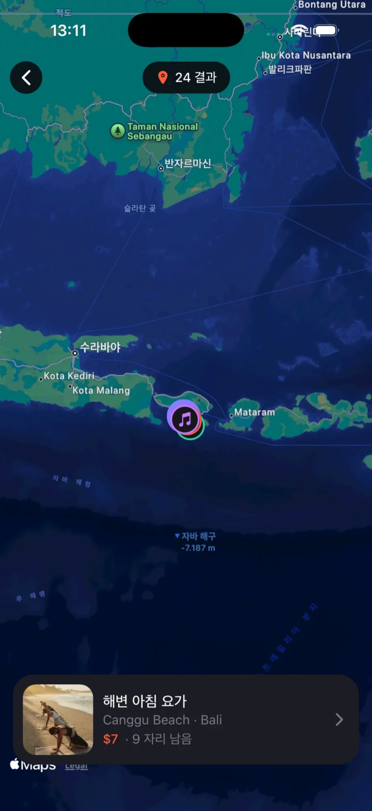

How we built it
A feed that shows a meetup's atmosphere first
A few photos and a description rarely tell you what music will be playing or who will be there. Partya opens on a reels feed of vertical videos shot by hosts.
Below each video sit the meetup name, the place, the spots left and a join button, so you can decide the moment you see it. Likes and saves keep the meetups you are interested in close at hand.

Find it, see it on the map, join in one tap
On the explore screen, choose meetups with search, categories and filters such as Today and Weekend, and find nearby ones on the map. Even a traveler who has just arrived in an unfamiliar city can start with what is happening close by right now.
The meetup page shows the time and place, capacity and spots left, and the host, with one button to join or cancel. Every time you join, you earn points.

Anyone can host
Hosting a meetup had to be easy too. Pick a template such as Food, Nightlife or Sports on the create screen and the fields fill in; set the time, place and capacity, and the meetup is live.
Hosts can edit or cancel their meetups later, and manage spots and participants.

The conversation continues after you meet
Once you are confirmed, a live group chat opens for the participants. Since people come from different countries, messages written in other languages can be read in translation.
Operators manage members and meetups from a desktop admin, and every change is kept in an audit log.